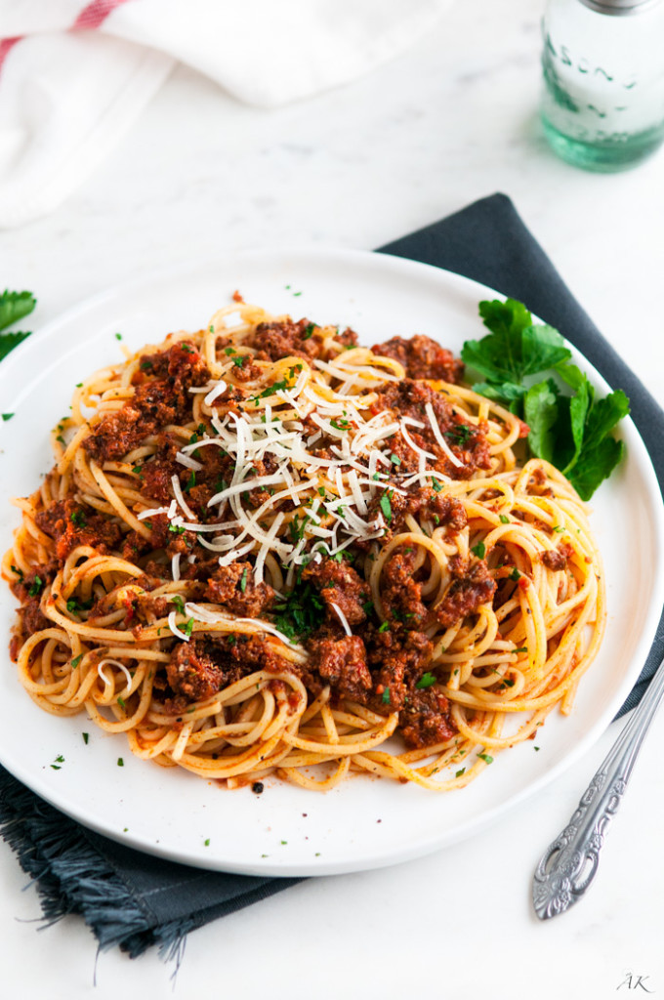

Beef Spaghetti

Homemade Spaghetti Sauce with Ground Beef
This recipe has been handed down over generation. It is a great recipe that the whole family love and can be
served over any kind of pasta
This rich ground beef dish will satisfy your comfort food craving. Nothing better than gathering the family
around the table for a hot rich beef spaghetti meal. You and your family will love it!
Ingredients
- 1 punds ground beef
- 1 medium onion, chopped
- 4 cloves garlic, minced
- 1 small green bell pepper, diced
- 1 (28 ounce) can diced tomatoes
- 1 (16 ounce) can tomato paste
- 2 teaspoons dried oregano
- 2 teaspoons dried bail
- 1 teaspoon salt
- 1/2 teaspoon ground black pepper
Steps
- Combine ground beef, onion, garlic, and green pepper in a large saucepan over medium-high heat. Cook and
stir until meat is browned and crumbly and vegetables are tender, 5 to 7 minutes. Drain grease.
- Stir diced tomatoes, tomato sauce, and tomato paste into the pan. Season with oregano, basil, salt, and
pepper. Simmer spaghetti sauce for 1 hour, stirring occasionally.
Home